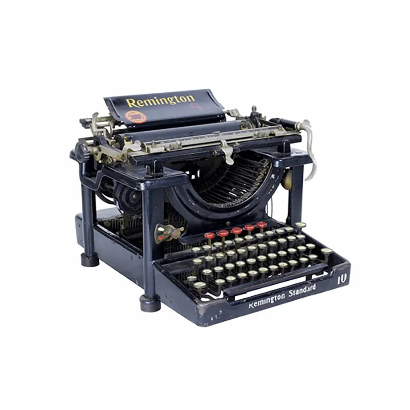
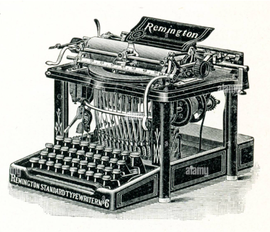
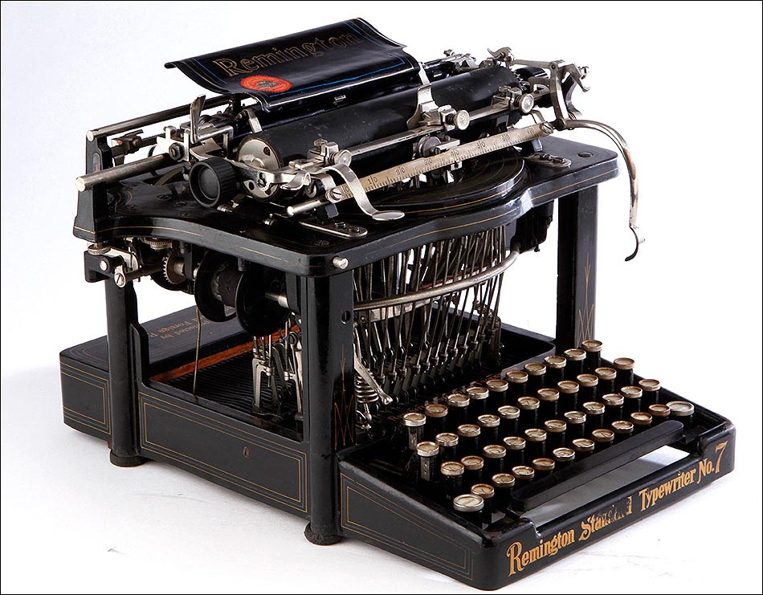
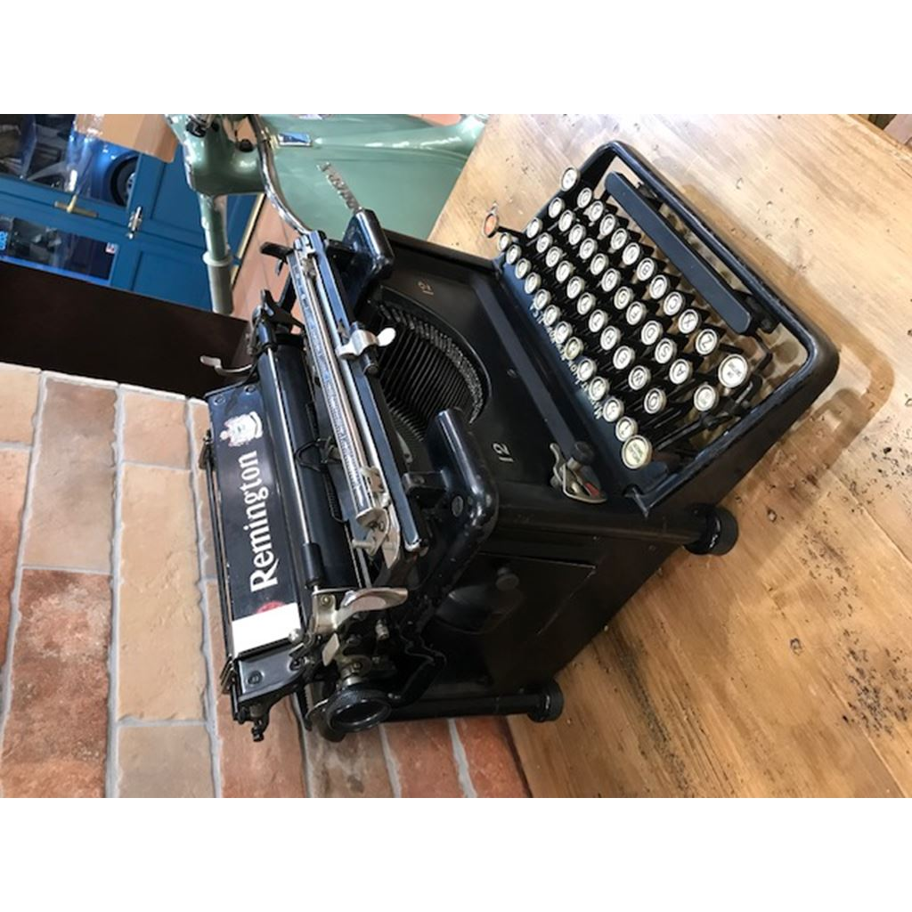

What is it?
The Remington Standard was one of the most influential typewriters of its time, an instrument that defined an era of craftsmanship and written communication. Our SmartType pays homage to that legacy: it retains the original mechanical structure, the weight of the keys, and the unmistakable rhythm of the metal striking the paper. At the same time, it introduces a fresh narrative for the modern creator, celebrating the beauty of analog writing in an increasingly digital world. Designed for writers seeking intention, silence from distractions, and a tactile connection to their ideas, the SmartType bridges the past and present like no other digital keyboard can.

History
Since the late 19th century, Remington has set standards in mechanical type. Inspired by that legacy, the
SmartType respects the original mechanisms — levers, hammers, and type rows — manufactured with traditional
techniques and finished with contemporary craftsmanship.

Detailed Features
- Mechanical Excellence: Metal carriage, hardened steel hammers,
and calibrated springs for a consistent typing experience.
- Keyboard: Keys with spherical profile and optimized travel for
prolonged typing.
- Ribbon: Dual-sided ink ribbon, easy to replace.
- Materials: Steel, brass and varnished wood in details of the
casing — designed to help writers focus solely on their text without digital interruptions.
- Collector's Edition: Each unit comes with a numbered plaque,
making it a unique addition to any collection.
- Dimensions & Weight: Compact yet solid — designed for stability
while writing.

Recommended Use
Perfect for novelists, journalists, creatives, and collectors. Recommended for uninterrupted writing
sessions and as a centerpiece in studios and offices with a vintage aesthetic.
